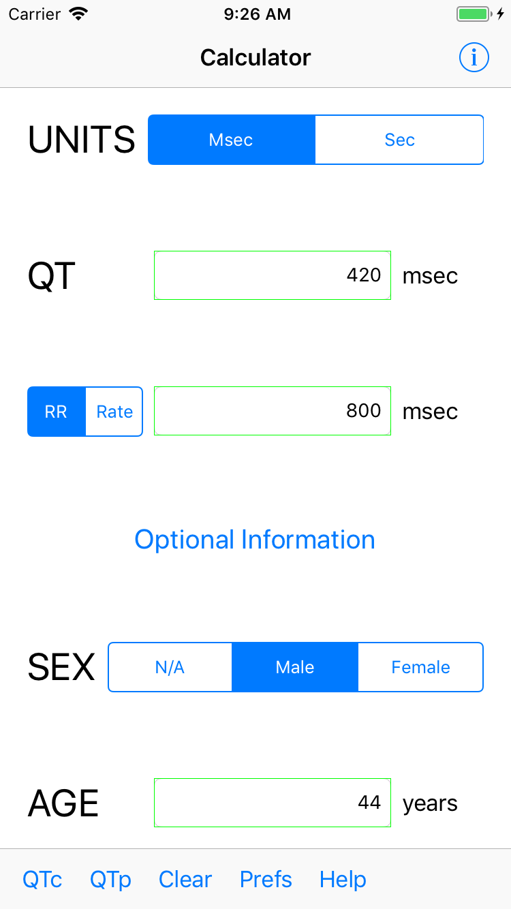
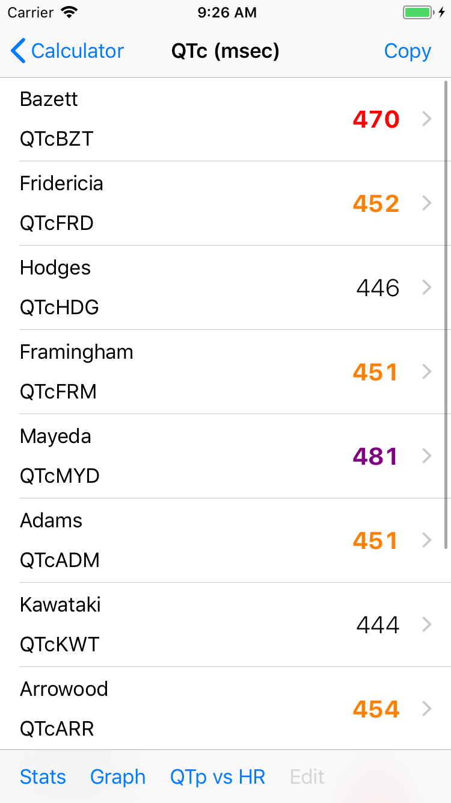
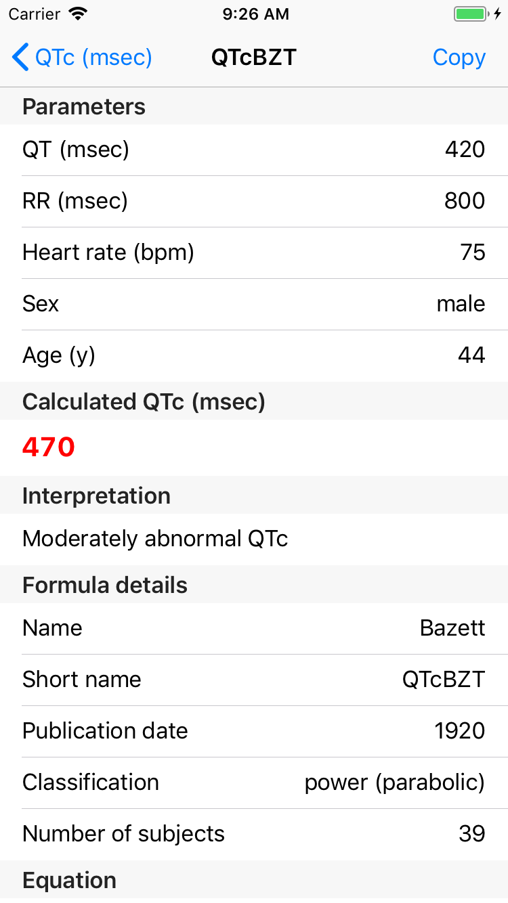
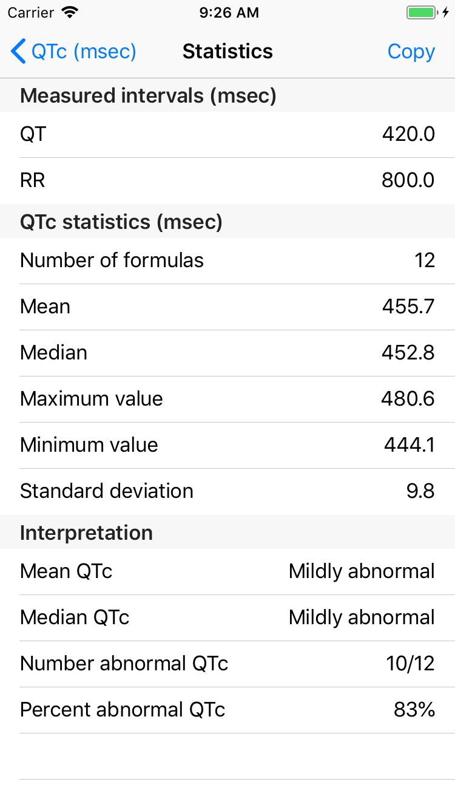
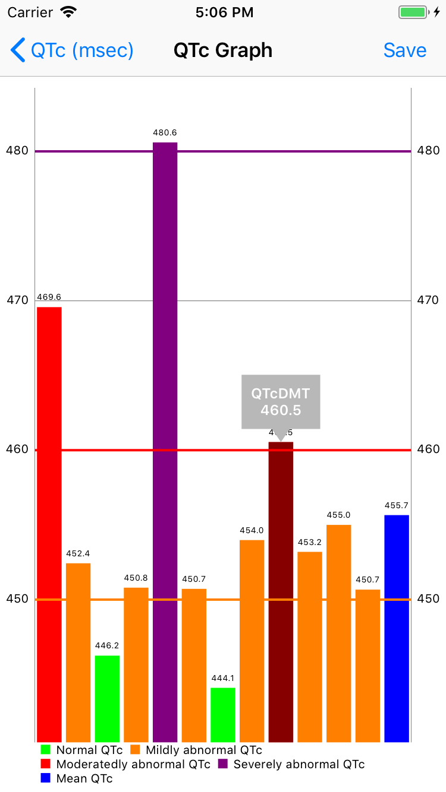
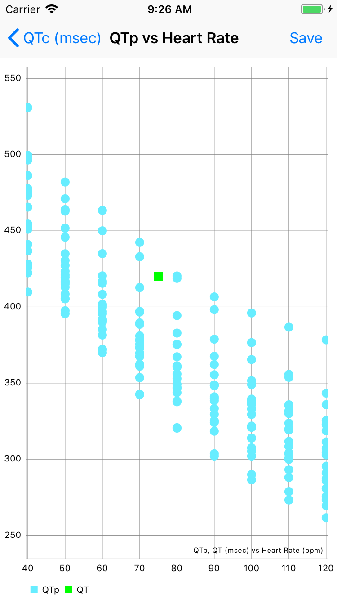
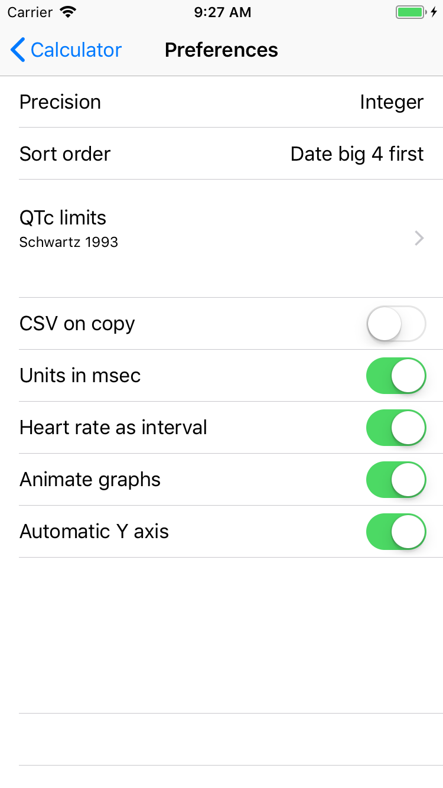

Table of Contents
Unlocking the QT interval
Figure 1: Long QT and Torsades de Pointes
It has long been recognized that the duration of the electrocardiographic QT interval is dependent on heart rate. In 1920 Bazett1 was one of the first to describe this dependency in mathematical form, relating the QT interval to the square root of the RR interval. The familiar Bazett formula, developed using primitive methodology and based on only 39 subjects, has become the most commonly used formula for correcting the QT interval for heart rate—this despite the availability of a large collection of newer formulas developed from studies with better methodologies and subjects numbering up to the thousands. Further discussion of this somewhat sorry state of affairs can be found in the blog post Hacking the QTc.
The QT interval is important. Long and short QT intervals have been associated with ventricular arrhythmias and sudden death. Many drugs, antiarrhythmic and otherwise, can prolong the QT interval.
The cavalier cardiologist might glance at the automatically measured and calculated QTc interval on a digital electrocardiogram and be satisfied, despite well-known issues with automatic measurement of the QTc2. He or she might not even know (or care about) which QTc formula was used by the computer. The more inquisitive cardiologist might want to measure the QT manually (the EP Calipers app is a good way to do this) and then put some thought into the evaluation of that QT interval. This app, EP QTc is intended for the latter type of cardiologist.
Formulas and limits of normal
The numerous QTc (corrected QT) and QTp (predicted QT) formulas in this app are mostly gathered from the paper by Rabkin et al., Nomenclature, categorization and usage of formulae to adjust QT interval for heart rate. To the extent possible, primary sources were obtained and reviewed for each formula. In addition, there have been numerous attempts to define the normal QTc interval. Many of these definitions are also included in the app.
Calculator screen

Figure 2: Calculator screen
At minimum enter the QT interval and heart rate or RR interval. Units can be seconds (sec) or milliseconds (msec). Results are given in the same units (though strictly speaking the exact units or calculated QTc intervals depend on the formula, e.g. in the Bazett formula the QTc units are sec0.5). If possible also add sex and age, as some formulas are dependent on sex and/or age.
Menu items
- QTc Calculate and show results of QTc formulas
- QTp Calculate and show results of QTp formulas
- Clear Clear values and start over
- Prefs Show preferences screen
- Help Show this screen
Results screen

Figure 3: Results screen
This shows a list of results of either the QTc or QTp formulas. If you have selected QTc limits on the preferences screen, the results will be color coded depending on if they are normal or abnormal. Tap any result and get a details screen as described below. Tap the Copy button at the top right of the screen and the list of results will be copied to the clipboard so that they can be pasted elsewhere. If you have the CSV on copy preference set, the results will be copied in CSV format, which can be easily imported into a spreadsheet program.
Menu items
- Stats Show the statistics screen, giving overall statistics of the formula results.
- Graph Show a bar graph of the results.
- QTp vs HR Show the measured QT vs the results of all QTp formulas.
- Edit This button is only enabled if you have chosen the Custom sorting preference. If you tap this button, the order of formulas can be customized, and you can delete formulas if you like. Tap Save to keep the changes you made, Reset to undo previously saved customization, or Cancel to cancel your changes.
Details screen

Figure 4: Details screen
This screen shows the detailed results of a specific formula. It is divided into sections.
Parameters
The input parameters, including QT, RR, heart rate, sex and age.
Calculated QTc or QTp
The result of the formula
Interpretation
The interpretation of the result, based on the QTc limits you have set. Note that QTc limits only apply to QTc formulas and that QTp intervals are by definition normal. Also note that the interpretation may be undefined if you are using QTc limits that require entering the sex or age and you have not done so. The interpretation may be error if the formula requires parameters such as sex or age and you have not entered them.
Formula details
- Name the first author of the paper.
- Short name the standard abbreviation of the formula, based on Rabkin et al.
- Publication date
- Classification the mathematical type of the formula. More details can be found in Hacking the QTc.
- Number of subjects number of subjects from which the formula was derived.
Equation
The formula’s equation, based on QT interval, HR (heart rate) or RR interval. Parameters and results are in sec unless otherwise noted. The equation has sometimes been normalized when the original form was unusual or had unusual units. For example, the original units of Fridericia (QTcFRD) were 0.01 sec. Another example: the original form of Merri (QTpMRR) was log(QT) = k + α * log(RR). For uniformity, this equation was rewritten to solve for QT.
Reference
The reference for the formula is given, as well as the DOI link if available. If a DOI link is present, it is possible to tap on it and go the reference online (though be forewarned, many are behind paywalls).
Notes
Short summary of the study population.
QTc limits
The QTc limits, if any, you have chosen to evaluate the formula result.
QTc limits details
The cutoffs for normal and abnormal QTc intervals.
QTc limits references
The references for the QTc limits. If there is a DOI link you can tap it and bring up the online reference.
Copy button
As with the results screen, tapping the Copy button in the upper right corner will copy this screen to the clipboard.
Statistics screen

Figure 5: Statistics screen
This screen summarizes some statistics of the formulas. The sections are as follows:
Measured intervals
The measured intervals: QT and RR.
QTc or QTp statistics
- Number of formulas The number of formulas that were applied, excluding formulas that were not used due to missing parameters (such as sex or age).
- Mean and Median The mean and median of the results.
- Maximum and Minimum value The range of the results.
- Standard deviation The standard deviation of the results.
Interpretation (QTc)
- Mean QTc, Median QTc In this case these values are compared against the QTc limits you have chosen.
- Number abnormal QTc, Percent abnormal QTc The number of results considered abnormal compared with the total number of results. For the purposes of this analysis any non-normal result (including borderline, mildly abnormal, etc.) is considered an abnormal result.
Interpretation (QTp)
- QT vs QTp Whether the measured QT is inside or outside the range of the calculated QTp intervals. See Hacking the QTc for more details.
- δ(QT-QTpMax) or δ(QT-QTpMin) How far above or below the maximum or minimum QTp result the QT is. This value is absent if the QT is within the QTp minimum to maximum range.
Copy button
Tapping the Copy button in the upper right corner will copy this screen to the clipboard.
Graph screen

Figure 6: QTc graph screen
This screen displays a bar graph of QTc or QTp results, including the mean QTc or QTp, and in the case of the QTp graph, the measured QT for comparison. Results are color-coded based on the selected QTc limits, or comparison of the QT to the QTp range. Color coded cutoff lines are drawn to indicate the QTc limits. The graph can be zoomed and moved with finger gestures. Tap on a bar to see the QTc or QTp formula and result for that measurement. You can change the Y axis and whether or not the graph is animated using the preferences screen.
Save button
Save the graph to the Photos collection.
QTp vs HR

Figure 7: QTp vs HR
This graph plots the QTp at a range of heart rates and the measured QT for comparison. The measured QT is color-coded red if outside the QTp range, and green if inside. This graph can also be zoomed and moved with finger gestures, and saved to the Photos collection with the Save button.
Preferences screen

Figure 8: Preferences screen
Customize the calculator using the preferences screen.
- Precision Select rounding to integer, 1, 2 or 4 decimal places, 4 figures (e.g. 123.4, 1234, 12.34) or no rounding. Rounding applies to msec values. Sec values always show at least 4 decimal places.
- Sort order Sort results by date, formula name, number of subjects studied, result, or customize the order of formulas. Options for sorting by date and name also include "big 4 first" versions. The "big 4" formulas are the ones most frequently used: QTcBZT, QTcFRD, QTcHDG, and QTcFRM (Bazett, Fridericia, Hodges, and Framingham). These big 4 options only apply to sorting QTc formulas. If you choose the custom option, formulas can be rearranged or deleted per your personal preference using the Edit button on the results screen.
- QTc limits Tapping this preferences brings up the QTc limits screen, discussed below.
- CSV on copy Turn on to copy data to the clipboard using CSV format, a format that can be easily imported into a spreadsheet program.
- Units in msec Turn on to make the default calculator units msec. Turn off to make sec the default. This option only takes hold when the app is restarted, otherwise the last selected units are used.
- Heart rate as interval Turn on to make the default heart rate entry an interval (either sec or msec) as opposed beats per min when this is turned off. Again this option only applies to app startup.
- Animate graphs Turn on to see animated graphs.
- Automatic Y axis When on, the program will calculate the Y axis scale. When off, the options below apply.
- Y axis maximum (msec) the maximum value of the Y axis in msec. This value and the one below are sanity checked and won’t take hold if they are too bizarre.
- Y axis minimum (msec) the minimum Y axis value in msec.
QTc limits screen

Figure 9: QTc limits
A number of publications have attempted to delineate upper and lower limits of the QTc. You can select one or more of these sets of limits. If you do select multiple limits, the more restrictive limits will "win out" over the less restrictive ones. For example, if one limit says an abnormal QTc is > 440 msec and another > 460 msec, then a QTc of 450 msec will be classified as abnormal. Selecting multiple QTc limits is appropriate when you want to select an upper and a lower limit for the QTc.
Some limits are sex or age dependent. If you don’t enter the sex or age, values will be interpreted as "undefined." Some limits do more than distinguish between normal and abnormal. Additional distinctions include "borderline," or "mild," "moderate" or "severe." These are color-coded and the colors are used in the results and graph screens. Colors are:
| Color | Interpretation |
|---|---|
| Cyan | QTp interval |
| Green | Normal QTc or QT |
| Red | Abnormal QTc or QT |
| Black | Normal mean interval |
| Blue | Abnormal mean interval |
| Orange | Borderline abnormal QTc |
| Orange | Mildly abnormal QTc |
| Red | Moderately abnormal QTc |
| Purple | Severely abnormal QTc |
Acknowledgments
- Thanks to Marian Stiehler for help in acquiring the original literature that forms the basis of these QTc and QTp formulas!
- This app uses SigmaSwiftStatistics for statistical analysis of the QT formulas. This framework is copyright (c) 2015 Evgenii Neumerzhitckii and is licensed under the MIT License.
- The app uses the Charts framework for graphing. This framework is copyright 2016 Daniel Cohen Gindi & Philipp Jahoda, and is licensed under the Apache License, Version 2.0.
- The app uses Validator which has an unrestricted license.
Limitations
This app uses published formulas and every attempt has been made to verify sources and test for accuracy. Clinical interpretation of the results of this app is up to the clinician. The QT interval is only one factor to consider in diagnosing long and short QT syndromes and the risk of ventricular arrhythmias. EP Studios is not responsible for the accuracy of this app or its application for clinical use. On the other hand, every effort will be made to correct any errors brought to our attention. Please let us know if you have any corrections, suggestions, or additions.
Privacy
No user data is collected by this app. No data is stored either on the user’s device or on remote servers. Please see the EP Studios privacy policy for more information.
License
This app is open source and licensed under the Apache License, Version 2.0. When used with Apple devices via the iTunes App Store, it is subject to the standard Apple iOS license agreement. Source code for this app is available on GitHub.
This app is copyright © 2018 by EP Studios, Inc. All rights reserved.
Contact
Website: https://www.epstudiossoftware.com
Email: mannd@epstudiossoftware.com
Footnotes:
Bazett HC. An analysis of the time-relations of electrocardiograms. Heart 1920;7:353–370.